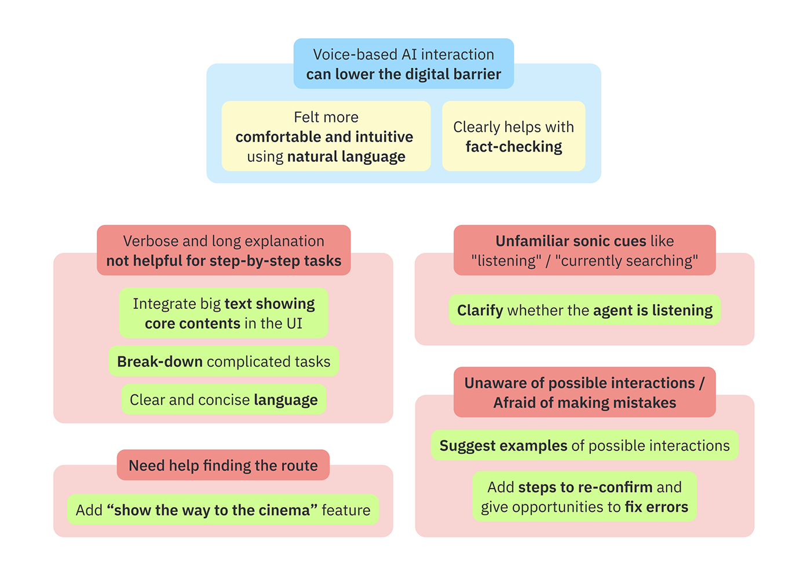

AI-Assisted Ticketing for the Elderly
2025 Korea-Nordic Future Challenge Group Project
MY ROLE
Implementation
Hi-Fi Prototyping, Programming
User Study
Study Design, Interviews, and Anlaysis
TEAM
1 Project Advisor
2 Korean Members
with CS/Design and Media/PR Background
2 Swedish Members
with CS Background
DURATION
Aug 2025 - Present
4 months
What’s Interesting / Innovative
- Identifying key usability challenges of voice-based AI among elderly users—such as uncertainty and fear of making mistakes—and translating these insights into both interaction structure and interface elements.
- Ideating semi-structured conversational flows that balance AI’s flexibility with scaffolded, step-by-step guidance for complex tasks
- Exploring voice-based AI as an accessibility layer for everyday digital services, enabling elderly users to engage more independently
Relevant to: Personal Robots Group
- Demonstrates interest in AI as a companion, integrating conversational AI and fostering AI literacy to support people, with particular attention to marginalized communities
- Demonstrates the ability to build functional and usable systems with attention to design quality
- Demonstrates diverse design approaches, including semi-structured conversational flows, for integrating conversational AI to support users
- Demonstrates experience designing and conducting user studies with older adults
Introduction
Korea-Nordic Future Challenge is a collaborative program organized by the Korea Foundation for Advanced Studies (KFAS), Uppsala University, and KTH Royal Institute of Technology. The program aims to foster cultural exchange between students in Korea and Sweden while engaging them in a group project addressing SDG-related challenges in both countries.
Problem
With the goal of contributing to SDG 10: Reduced Inequalities and SDG 11: Sustainable Cities and Communities, our team identified spatial exclusion as the core issue.
Spatial exclusion is a significant problem in Korea. Older adults often feel unwelcome in “trendy” places or districts and end up spending time in spaces such as subways or airports simply because they are free and accessible.
This issue is further exacerbated by the rapid surge of digitalization. Many seniors struggle
with self-service kiosks or digital ticketing systems, which deepens their sense of
exclusion.
Digital exclusion is also a critical issue in Sweden, where socially vulnerable groups—including
older adults, residents in rural areas, and low-income households—are disproportionately
affected.
Needfinding Research Question
“What are the barriers and needs of elderly people when accessing public places?”
Needfinding Interviews
To better understand the lived experiences of elderly users, we conducted semi-structured interviews with four participants aged 65 and above—two from Korea and two from Sweden.
The interview topics included:
- Daily Life | how participants spend their free time, preferred activities, barriers to participation, and how they discover events or places
- Digital Literacy | familiarity with digital devices, challenges encountered, and strategies for resolving issues
- Public Policy | experiences with government-provided programs or spaces and how these services are communicated
Barriers Identified
A key insight from the interviews was the range of factors that make access to public spaces difficult for elderly users:
- Non-Digital Barriers | financial constraints, physical obstacles such as stairs, limited public transportation in rural areas, and social pressure to remain quiet or unobtrusive
- Digital Barriers | difficulty using ticket vending machines, booking tickets online, and completing tasks such as renewing library books digitally

Among these, ticketing difficulties were mentioned most frequently and also aligned closely with our team’s interests. As a result, we decided to focus on improving the ticketing experience.
Many participants reported that when faced with ticketing challenges, they either ask family members for help, visit offline vendors if available, or give up entirely.
Design Problem
“How might we improve interactions with AI so that elderly people can independently book tickets online?”
AI Usability Test Session
Based on our interviews, we observed that some elderly users were already using AI tools with relative ease and found conversational interactions intuitive. This led us to explore AI as a potential accessibility tool.
We conducted a usability test session to evaluate whether elderly users could complete tasks—such as booking tickets or performing simpler actions—using AI, and to identify interaction barriers in the process.
Insights & Design Rationale
Voice-based AI interactions showed strong potential to lower digital barriers, as participants found natural language communication comfortable and intuitive. However, while voice interaction worked well for simple tasks like fact-checking, it was insufficient for complex, multi-step processes. Long and verbose explanations often caused confusion rather than clarity.
Additional usability issues emerged:
- Sonic cues were unfamiliar and difficult to interpret
- Users were often unaware of what actions were possible
- Fear of making mistakes led to hesitation and passive interaction
Participants also expressed a desire for end-to-end support, including guidance to the event venue after completing ticketing.
Based on these findings, we synthesized key insights and corresponding design rationales, shown below.
Prototyping
Building on the insights from the usability test, I designed a prototype focused on simplifying the ticketing process.
The core concept is to break down complex tasks into a semi-structured conversational
flow, where each step completes a small, manageable action.
“Semi-structured” means that while an example flow exists, the conversation is not rigid. As
long as the necessary information for booking is collected, the interaction can adapt flexibly
based on user input or agent guidance.
This approach ensures that elderly users complete tasks in a scaffolded manner, while still leveraging AI’s ability to respond flexibly to diverse situations.
Main Features
The interaction begins with a welcoming message that introduces the agent’s role. The UI is divided into three main sections:
- Top Section | large, clear text displaying key information the agent is communicating, addressing difficulties participants had with voice-only interaction
- Middle Section | a visual indicator showing whether the AI is currently listening, reducing confusion about when users can speak
- Bottom Section | suggested interaction options that help users feel more confident initiating responses
Throughout the process, the system provides reassurance and confirmation to reduce anxiety:
- At the beginning, users are informed that they can ask the agent to speak more slowly, repeat information, or pause
- At each step, the agent confirms whether the recognized information is correct
Example Interaction Flow
Once the process begins, the agent asks for personal information required for booking. This information is saved so users do not need to repeat it in future sessions.
Next, users are asked about their movie preferences. They can specify a particular film, genre, or style, or request a list of trending movies. The agent flexibly curates recommendations based on the request, allowing users to explore alternatives if needed.
During booking, the agent collects required details such as cinema location, date and time, screening type (2D, 3D, 4D, etc.), and number of tickets. Seat selection can be made either by specifying seat numbers or expressing higher-level preferences.
Payment is completed by scanning a credit card using the camera and entering a passcode via the keypad.
Once ticketing is complete, the agent can also provide navigation guidance to the cinema.
Current Project Status
The project has successfully passed the midterm progress review, during which we presented the
prototype and received positive feedback.
Moving forward, we plan to implement a functional prototype over the winter and conduct further
user testing.
Through this project, we aim to demonstrate the potential of AI agents as accessibility tools and to advocate for policies that integrate AI into inclusive digital service design.
Try it out!
You can interact with our example flow below: